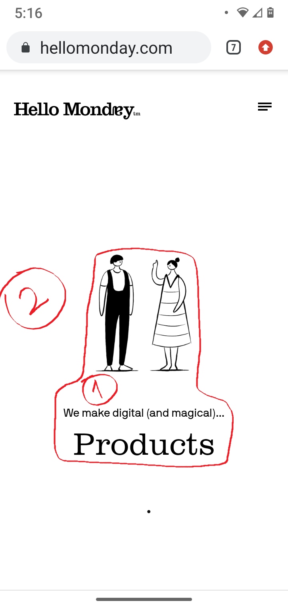
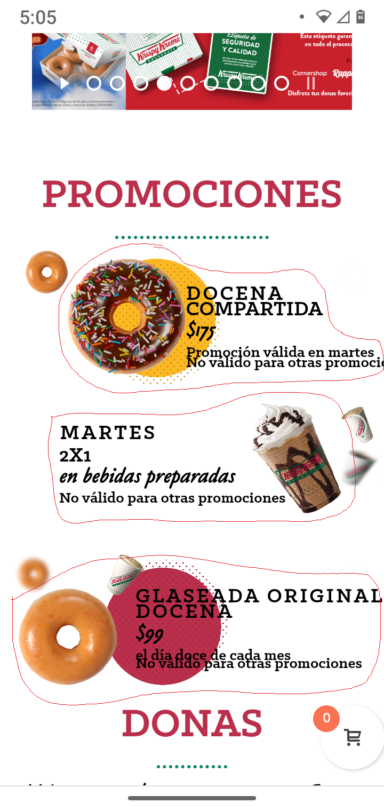
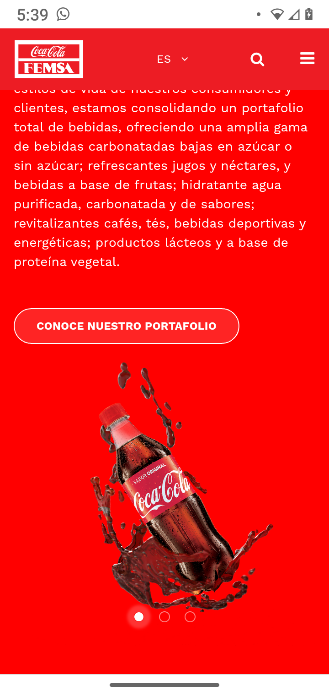

WHITE SPACE AND CLEAN DESIGN
Hello Monday
hellomonday.com WHITE SPACE
In this picture, we see the designer left most of
the space empty. This technique makes our eyes
to focus on the center of the page. It also gives
the viewer a space to rest her or his sight.
CLEAN DESIGN
We also see that the drawing and the text is
simple. The color is pure black, and there are
three main objects:
1. The drawing
2. The description
3. The big word ("Products")
PARC: PROXIMITY
Krsipy Kreme
krispykreme.mx PROXIMITY
There are three main products in the homepage,
which are two donuts and one drink. Each one
has some kind of price and brief description
attached to it. If the objects and the text would
not be that close to each other, the customer
would not be able to knwo which belongs to which
one. This is the reason why proximity plays a
big role in this screenshot.
PARC: CONTRAST
Coca-Cola
coca-colafemsa.com CONTRAST
This Coca-Cola website takes advantage of
vivid and bright colors. The predominant
is color red, and it also has brown and white.
But this red background makes the product to
stand out of everything else.